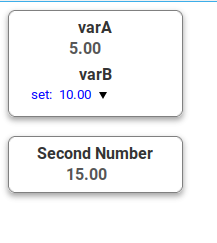

Jahmin Basics
Jahmin is a framework intended to simplify the necessary boiler plate to achieve an interactive server-client communication, the GUI is based on a set of reusable web-components that automatically update on app-state change. Jahmin core building blocks are:
- Customizable data-engines: which implements the server-client communication
- App state managment
- UI element are reusable web-components, written using the LitElement framework.
- A service-manager: that takes care of wiring all building blocks togheter.
Minimal Example
Install jahmin and UI Elements
npm install jahmin jmn-basic-elements
Import Jahmin
Then in your main.js you can import jahmin like the following (you need a bundler, like Webpack or Rollup):
// main.js
import {Manager,fakeDataEngine} from "jahmin"
Here in this example we are importing the ServiceManager and a fakeDataEngine, this type of engine is just for testing purpose and does not implement any communication with any server.
Add The Engine
// main.js
import {Manager,fakeDataEngine} from "jahmin"
var fake_engine = new fakeDataEngine("fake");
// Add engine to the service
Manager.AddEngine(fake_engine);
// Set default (optional)
Manager.SetDefaultEngine(fake_engine);
// Initialize the Engines and start subscribing
// variables from the components
Manager.Init();
One can add as many engine to the system as one wants. The name with whitch
one instantiate the engine is important (in this case is fake1) and will be used to
by the UI-components to define whitch engine to use to read variable values from the server.
Add UI Components
Import the components that you want to use. Jahmin comes with a set of very basic components like a colorBox (a box that changes color based on the status of a variable) a label, etc. A set of core UI-componets are defined in another repository jmn-basic-elements from which you can start with. In this example we are going to use a
And import the elements in the main:
// main.js
import {Manager,fakeDataEngine} from "jahmin"
import {numericIndicator, setNumber} from "jmn-basic-elements"
// ..... //
// ..... //
Now create an HTML file index.html, and in this file you can import your bundle.js where you compiled the main.js
togheter with jahmin and can directly use the imported UI-components:
<!--index.html -->
<!DOCTYPE html>
<html lang="en">
<head>
<script src="bundle.js"></script>
</head>
<body>
<color-box name="varA" style="max-width: 10rem;">
<numeric-ind name="varA">varA</numeric-ind>
<set-number name="varB">varB</set-number>
</color-box>
<br>
<color-box name="varC" style="max-width: 10rem;">
<numeric-ind name="varC"> Second Number</numeric-ind>
</color-box>
</body>
</html>
The HTML output page should look something like this:

Now you may have noticed that each of the components have an attribute name, this is how
one connects to the variable on the server, by variable name. Each component also have a engine
attribute, where one can specify the engine name, if not specified will default to the default engine name.